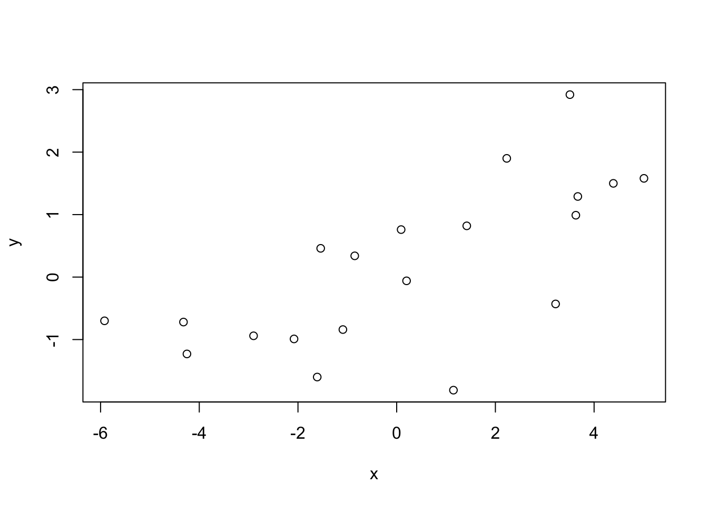
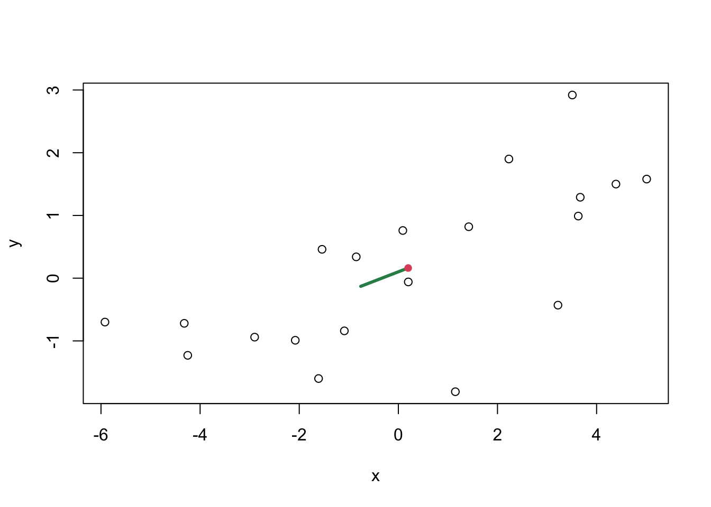
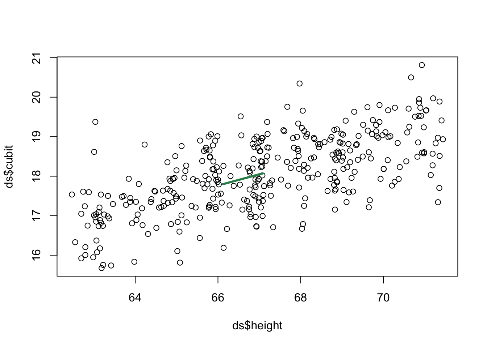
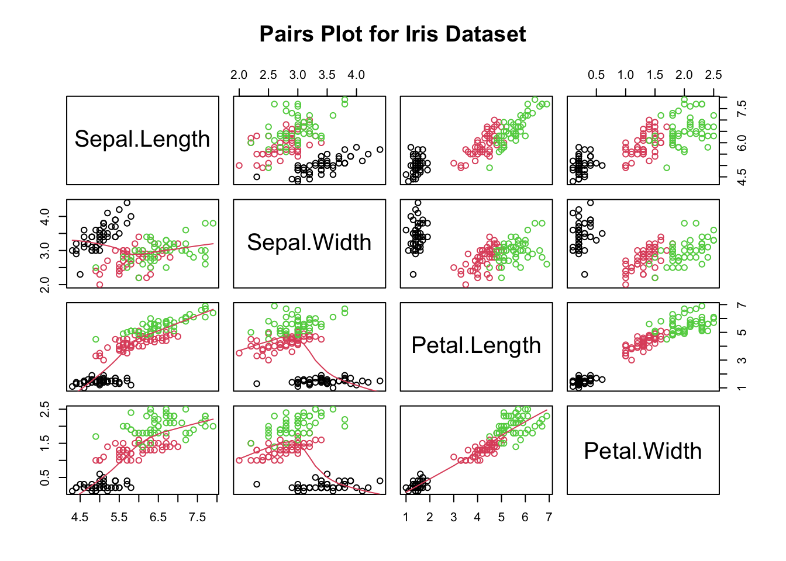

Read this data into R using read.csv(). Create a 2-dimensional scatter plot of the 20 observations (use plot() function in R).
# Get X and Y Components into vectorsx = ds$Xy = ds$Y# Create scatter plot of Y ~ Xplot(x,y)

Part B
Find the sample mean vector, and add this point to the plot using points(). You can make this point a different color using the col= argument, or you can make it a different plotting character using the pch= argument. For example: > points(sampMean[1], sampMean[2], pch=16, col=2
Add the eigenvector corresponding to the largest eigenvalue to the plot as a vector from the sample mean using lines(). Be careful here: if the first eigenvector is \((v_1, v_2)\) and the sample mean vector is \((\bar{x}_1, \bar{x}_2)\), you want a line from \((\bar{x}_1, \bar{x}_2)\) to \((\bar{x}_1 + v_1, \bar{x}_2 + v_2)\).”
# Find the index of the largest eigenvaluelargestEigenvalue <-which.max(sampEigenDecomp$values)# Extract the eigenvector corresponding to the largest eigenvaluelargestEigenvector <- sampEigenDecomp$vectors[, largestEigenvalue]# Calculate the endpoints of the line segmentsampMeanX <-mean(x)sampMeanY <-mean(y)xend <- sampMeanX + largestEigenvector[1]yend <- sampMeanY + largestEigenvector[2]plot(x,y)# Add the line segment to the plotlines(c(sampMeanX, xend), c(sampMeanY, yend), col ="seagreen4", lwd =3)points(sampMeanX, sampMeanY, pch=16, col=2)

Discussion for Part E
Question: Describe how the direction of this eigenvector relates to the cloud of data points
The eigenvector follows the trend of the data points, which are showing a positive increasing trend, and it culminates precisely at the location of the sample means for X and Y.
# Find the index of the largest eigenvaluelargestEigenvalue <-which.max(sampleEigenDecomp$values)# Extract the eigenvector corresponding to the largest eigenvaluelargestEigenvector <- sampleEigenDecomp$vectors[, largestEigenvalue]largestEigenvector
[1] -0.9621535 -0.2725080
# Create the scatter plotplot(ds$height, ds$cubit)# Calculate each sample meanmeanCubit <-mean(ds$cubit)meanHeight <-mean(ds$height)# Use Part D!xend <- meanHeight + largestEigenvector[1]yend <- meanCubit + largestEigenvector[2]# Plot the eigenvector as a line from the mean pointlines(c(meanHeight, xend), c(meanCubit, yend), col ="seagreen4", lwd =3)

Discussion for Part E
Question: Describe how the direction of this eigenvector relates to the cloud of data points
The eigenvector for the height and cubit follows the trend of the data points, which are showing a positive increasing trend. While not exactly the same, it’s similar to problem 1.
# Grab the eigenvalues from the eigen decompositioneigenvalues <- eigenDecomposition$values# Use the function "all" to check all eigenvalues to see if they're positive definiteisPositiveDefinite <-all(eigenvalues >0)isPositiveDefinite
[1] FALSE
# False! Now we need to find a vector x...# Get all eigenvector(s) that are negativenegVec <- eigenDecomposition$vectors[, which(eigenvalues <0)]# We need to normalize the eigenvector(s) using the equation vecNorm <- negVec /sqrt(sum(negVec^2))vecNorm
We end of getting a vector \(x = \begin{bmatrix} 0.3535534 \\ -0.3535534 \\ -0.3535534 \\ 0.3535534 \\ 0 \end{bmatrix}\) for which \(x^T A x < 0\), confirming that \(A\) is not positive definite.
Part C
The matrix-vector multiplication \(Ax\), where \(x = 4v_1 + 2v_5\), can be expressed symbolically as:
\[Ax = 4\lambda_1 v_1 + 2\lambda_5 v_5\]
In this expression, \(\lambda_1\) and \(\lambda_5\) are the eigenvalues corresponding to \(v_1\) and \(v_5\), respectively. If we want to calculate it, we could plug in the eigenvalues and solve.
Question 4
Part A
# Read the data from the CSV fileds <-read.csv("IrisData.csv")names(ds)
# Calculate the sample mean vector for each speciesspecies1MeanVec <-colMeans(ds[ds$type ==1, 1:4])species2MeanVec <-colMeans(ds[ds$type ==2, 1:4])species3MeanVec <-colMeans(ds[ds$type ==3, 1:4])
Part C
# Calculate the sample correlation matrix for all variablescorMatrix <-cor(ds[,])corMatrix
# Calculate individual correlation matrices for each speciesspecies1CorMatrix <-cor(ds[ds$type ==1, 1:4])species2CorMatrix <-cor(ds[ds$type ==2, 1:4])species3CorMatrix <-cor(ds[ds$type ==3, 1:4])
Part E
library(ggplot2)pairs(ds[, 1:4], main ="Pairs Plot for Iris Dataset",pch =21, col =as.numeric(ds$Type), labels =colnames(ds)[1:4],lower.panel = panel.smooth,)

You can totally spot some noticeable differences among these flowers. When it comes to telling them apart, Petal Width seems to be the way to go, thanks to their clear clustering that lets you easily identify the species. And if you look at Petal Length and Petal Width, it’s pretty apparent that they both follow a nice linear pattern in their clustering, making it even easier to tell them apart based on these features.
Question 5
Part A
To show that B is a symmetric matrix, we need to demonstrate that B equals its transpose, i.e., B = B^T. We have:
\[
B = A^T A
\]
Taking the transpose of B:
\[
B^T = (A^T A)^T = A^T (A^T)^T = A^T A = B
\]
Thus, B is a symmetric matrix.
Part B
To show that B is a positive semi-definite matrix, we need to prove that for any vector \(x\) in \(\mathbb{R}^p\), \(x^T B x \geq 0\). Let’s calculate this expression:
\[
x^T B x = x^T (A^T A) x = (x^T A^T) (A x) = (Ax)^T (Ax) = \lVert Ax \rVert^2
\]
Since the square of the Euclidean norm (length) of any vector is non-negative (\(\lVert v \rVert^2 \geq 0\) for any vector \(v\)), we have \(x^T B x \geq 0\). Therefore, B is a positive semi-definite matrix.
Part C
The sample covariance matrix S can be expressed as:
Where \(\bar{X}\) is an \((n \times p)\) matrix with n identical rows equal to the sample mean vector \((\bar{X}_1, \bar{X}_2, \ldots, \bar{X}_p)\). To show that S is positive semi-definite, we need to prove that for any vector \(x\) in \(\mathbb{R}^p\), \(x^T S x \geq 0\).
Let \(y = (X - \bar{X})x\), which is a linear combination of the columns of \(X - \bar{X}\). Now, the expression \(x^T S x\) can be written as:
\[
x^T S x = \frac{1}{n-1} y^T y
\]
Since \(y\) is a linear combination of the columns of \(X - \bar{X}\), \(y\) is a vector in \(\mathbb{R}^n\). The squared norm of any vector in \(\mathbb{R}^n\) is non-negative. Therefore, \(\frac{1}{n-1} y^T y \geq 0\), and as a result, $x^T S x .
This shows that the sample covariance matrix S is positive semi-definite.